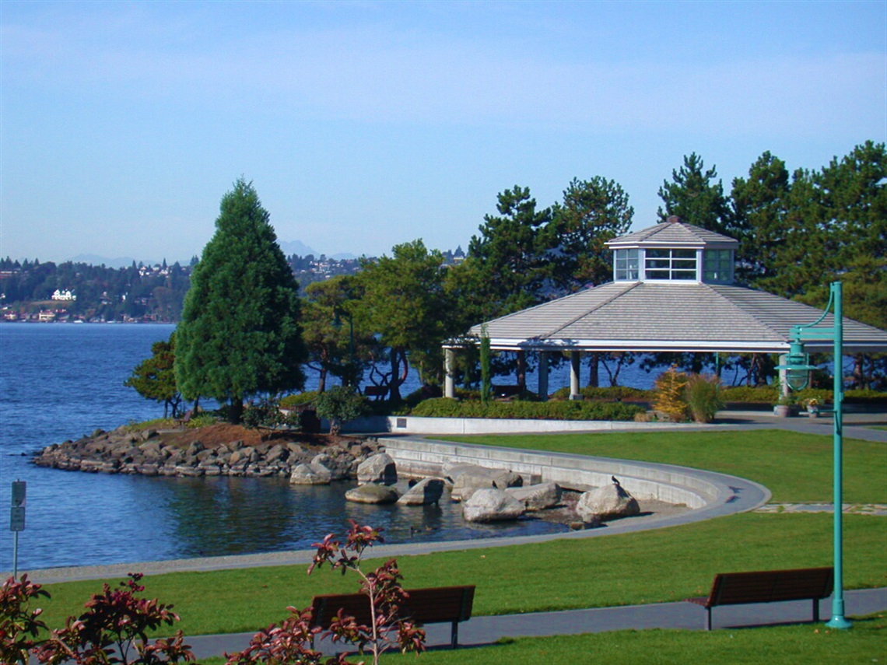
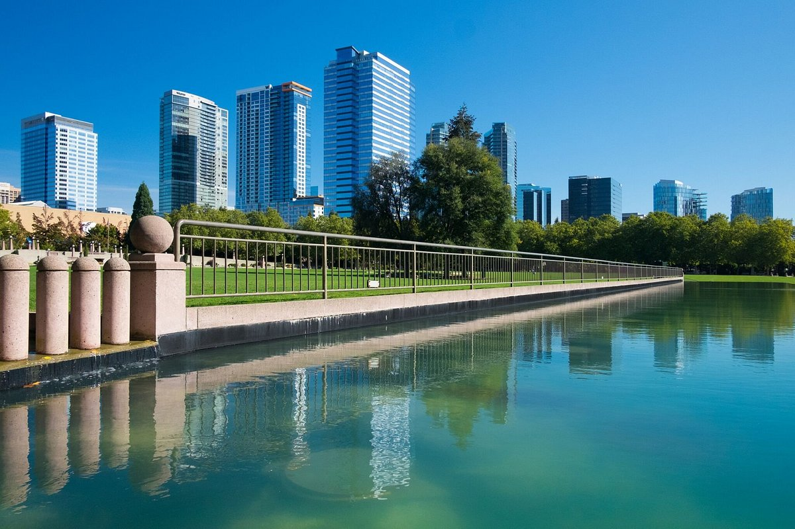

Marina Park
A scenic waterfront park known for its stunning lake views and calm ambiance. Visitors enjoy picnics by the water, paddleboarding, and local art installations throughout the promenade.
KIRKLAND WEATHER
Bridle Trails State Park
This lush forest park is a haven for horseback riders, joggers, and hikers. The winding trails beneath towering evergreens offer a true escape into nature — peaceful and shaded year-round.
REDMOND WEATHER

Bellevue Downtown Park
A vibrant urban oasis featuring wide lawns, a reflective pond, and a cascading waterfall. The circular walking path and city skyline views make it a favorite for joggers and photographers alike.
BELLEVUE WEATHER
Juanita Bay Park
Known for its wetlands and boardwalk views, this park attracts birdwatchers and photographers. The tranquil setting and easy trails make it a relaxing escape from city life.
KIRKLAND WEATHER